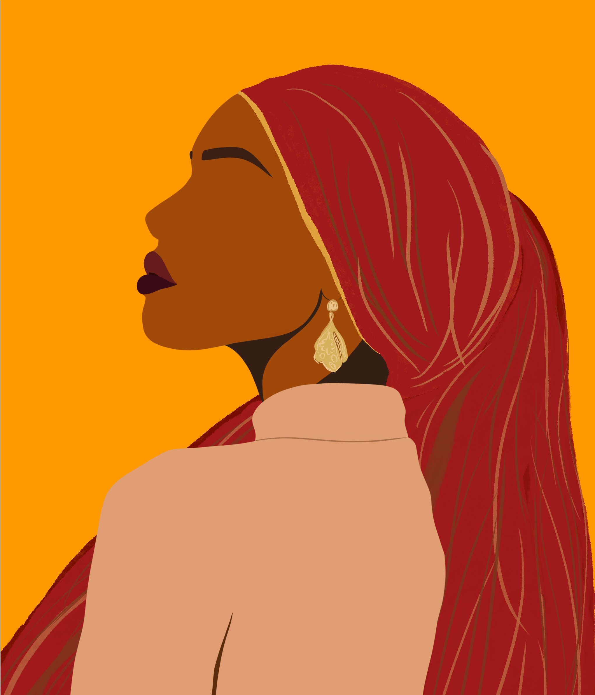

Hi there!
I started out with a fascination with websites and a desire to create unforgettable ones of my own. Learn more about my journey below.
My Career So Far
The Lockdown gave me the time to discover the world of software development. I loved the community and all it had to offer(Thanks, Bright Network!). Since then, I have had many stops and starts. Thankfully, I have found the structure and mentorship I need here at Stutern, learning Front End Development.
HTML
CSS
CANVA
WIREFRAMING
BOOTSTRAP